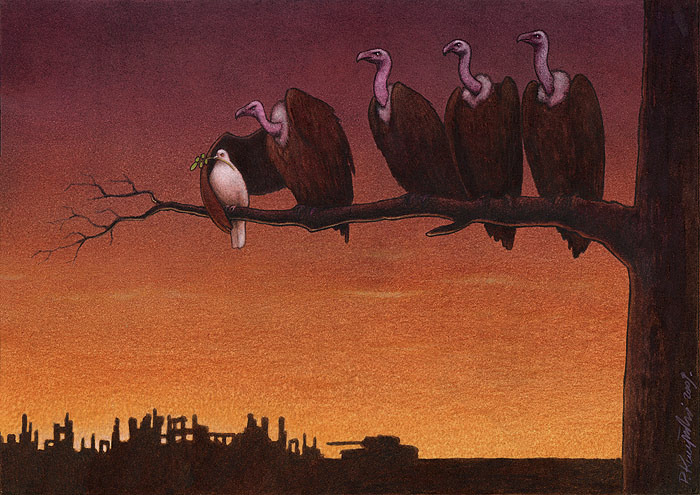
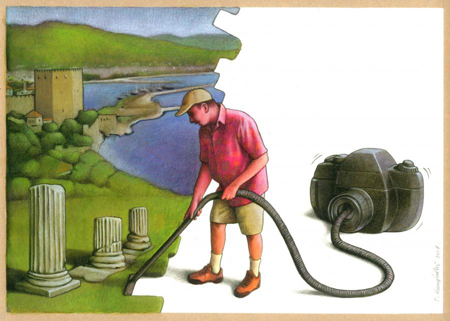
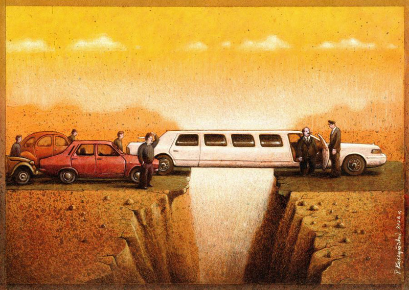
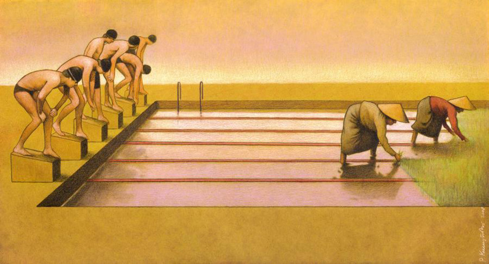
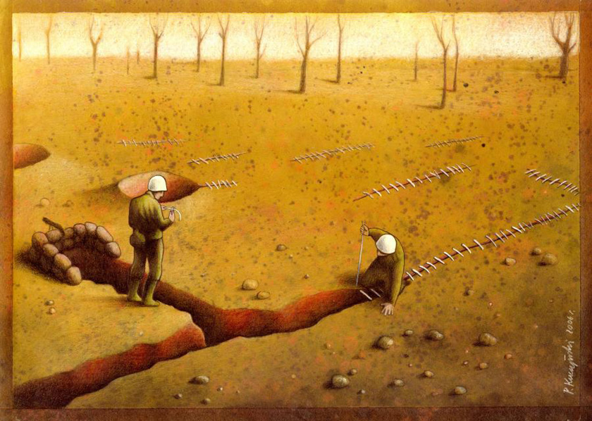
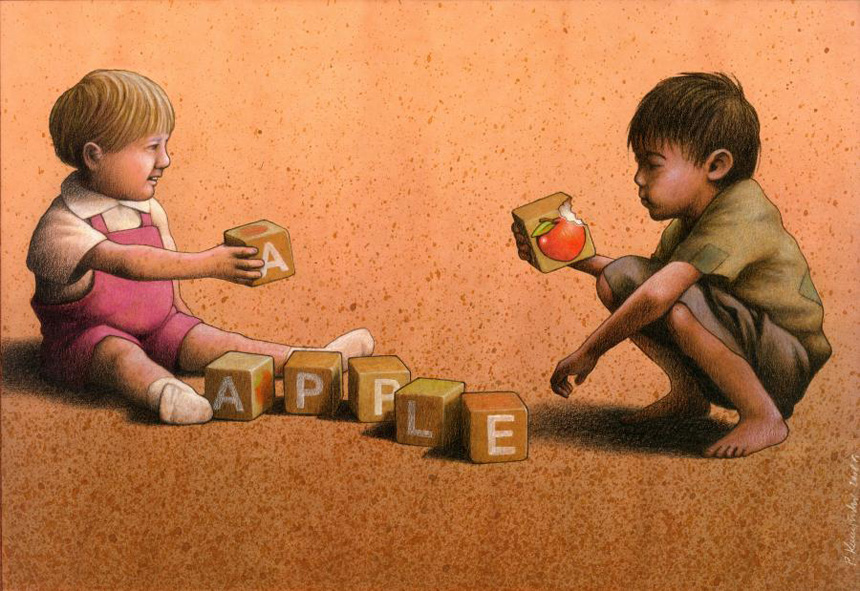

对于画画一直很喜欢，但了解不多，分析不出个所以然来。这些年文艺青年泛滥，稍微会唱点歌的就觉得已经进入音乐这门艺术的圈子，旁人也觉得他对音乐有天分。再看看社会上，到处不都是逼着小孩学钢琴的父母吗？我觉得很多都和音乐这门艺术相距甚远，许多人甚至连真正喜欢音乐都说不上。
话说回来，似乎逼着小孩学画画的倒不是很多，是否画家在当下社会依然潦倒？能出名当然就不用提了，不管干什么都能过上好日子。但对于还在奋斗过程中的来说，画家应该还是相对潦倒，备受冷落。君不见那么多少男少女挤着参加音乐选秀，期待一夜成名。却没有电视台搞个画画选秀。估计吸引不了眼球。但也好，绘画圈估计比现在喧闹的音乐圈要多点真诚，少很多搞事的人。 其实只是想说：最近在网上看到一个波兰画家（其实我也不知道他的水平名气能否称家）的画，还是挺喜欢的。上一次看到喜欢的画是石田彻也的。这位波兰画家倒是没有那么让人揪心。作品寓意也挺容易懂的，我只是觉得他的通感比喻特别好，用绘画的语言转述一个道理。道理不一定多深刻，但这是一个优秀艺术家的基本功。





